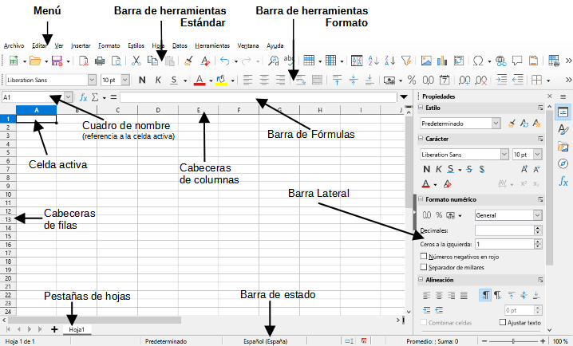

Ofimática
El módulo de Ofimática se centra en el uso de herramientas de productividad como procesadores de texto, hojas de cálculo, presentaciones y bases de datos, tanto en entornos Windows como Linux. Aprendemos a manejar software como Microsoft Office, LibreOffice y Google Docs.
📘 Contenidos destacados
- Uso de procesadores de texto: Microsoft Word, LibreOffice Writer.
- Creación y gestión de hojas de cálculo: Microsoft Excel, LibreOffice Calc.
- Diseño de presentaciones: Microsoft PowerPoint, LibreOffice Impress.
- Gestión de bases de datos: Microsoft Access, LibreOffice Base.
💻 Herramientas utilizadas
Microsoft Office, LibreOffice Suite, Google Workspace.
📷 Evidencias

Ejemplo de documento de texto realizado en Microsoft Word.

Ejemplo de hoja de cálculo en LibreOffice Calc con fórmulas y gráficos.